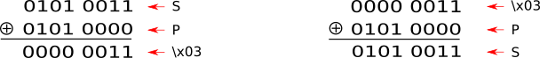

La cryptographie symétrique#
La méhode de chiffrement symétrique utilise une clef qui est la même pour le chiffrement et le déchiffrement.
Principe
La cryptographie symétrique utilise deux fonctions :
une fonction \(C(m,k)\) pour chiffrer qui prend en argument un message m et une clef de chiffrement k et renvoie un message chiffré m”.
une fonction de déchiffrement \(D(m',k)\) qui prend en argument un message chiffré m” et la clef de chiffrement \(k\) et renvoie le message déchiffré m.
Chiffrement de Vernam#
Le chiffrement de Vernam, aussi appelé masque jetable, consiste à combiner un message avec une clé de chiffrement en respectant les trois propriétés suivantes:
la clé de chiffrement est aussi longue que le message à chiffrer;
la clé est choisie de façon aléatoire;
chaque clé n’est utilisé qu’une seule fois d’où le nom de masque jetable.
Si on chiffre manuellement un message, on peut utiliser le chiffrement de Vigenère à partir d’une clé aléatoire aussi longue que le message à chiffrer.
Exemple
Supposons que le message à chiffrer soit le mot BONJOUR.
Prenons comme clé de chiffrement aléatoire GYSRNUA. On applique la clé au message et on obtient le message chiffré HMFABOR selon le principe du chiffrement de Vigenère.
Le chiffrement de Vernam est un chiffrement symétrique puisqu’on utilise la même clé pour chiffrer et déchiffrer le message.
Si on chiffre numériquement un message avec le chiffement de Vernam, on utilise la fonction logique XOR appelée ou exclusif.
Chiffrement par XOR
Le ou exclusif ou XOR est un opérateur logique noté \(\oplus\). La table de vérité est:
X |
Y |
X \(\oplus\)Y |
|---|---|---|
0 |
0 |
0 |
0 |
1 |
1 |
1 |
0 |
1 |
1 |
1 |
0 |
Une propriété intéressante de l’opérateur XOR est qu’il est réversible: si \(A \oplus B = C\) alors \(A \oplus C = B\) et \(B \oplus C = A\).
Cette propriété permet alors de déchiffrer un message :
Exemple
La lettre S a pour code décimal \(83\) dans la table ASCII ou UNICODE soit \(0101 0011\) en binaire;
La lettre P a pour code décimal \(80\) dans la table ASCII ou UNICODE soit \(0101 0000\) en binaire;
La valeur \(83 \oplus 80 = 0101 0011 \oplus 0101 0000\) ce qui donne, bit à bit \(0000 0011\) soit 3 en décimal:
Le caractère obtenu est non imprimable et a pour valeur décimale \(3\).
Opérateur XOR en Python
En Python cet opérateur est noté par le circonflexe et s’applique à des nombres entiers. Par conséquent, pour appliquer cet opérateur logique entre deux valeurs, une conversion de la valeur en décimal est nécessaire.
Lorsque les valeurs sont nombres entiers, l’opérateur s’applique directement : 3 ^ 4.
Lorsque les valeurs sont des caractères quelconques, une conversion du caractère en valeur décimale est nécessaire. Ensuite, le résultat décimal pourra être transformé en caractère. Cela est alors équivalent à l’opération logique XOR avec les écritures binaires.
Faiblesse de la cryptographie symétrique#
La cryptographie symétrique est très robuste et même impossible à déchiffrer en théorie si la clef de chiffrement est aussi longue que le message à chiffrer et utilisée une seule fois. En pratique cela n’est pas possible mais on peut tendre vers ces pratiques ce qui rend très sûr le chiffrement.
Quelle est sa faiblesse ?
Elle réside dans la transmission de la clef de chiffrement qui est utilisée pour chiffrer et déchiffrer le message. Cela implique, à un instant donné, de transmettre la clef et donc un risque d’interception.
Pour conclure, les algorithmes de chiffrement symétriques comme AES (Advanced Encryption Standard) reposent sur un chiffrement similaire au chiffrement XOR avec une clef initiale étendue mais pas en la répétant naïvement comme pour Vigenère.
Ce chiffrement est très sûr et surtout très rapide car l’opérateur XOR est directement intégré à l’unité arithmétique des processeurs, ce qui permet de chiffrer des flux instantannément comme l’audio ou la vidéo.